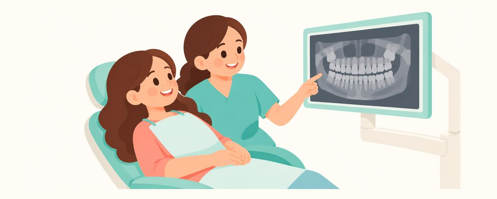

사랑니 평가는 언제? 10대 중후반 검진과 발치 판단
사랑니는 보통 17~21세에 나와요. 10대 중후반 검진 때 필요하면 X선으로 미리 확인해요. 모두 빼야 하는지, 언제 치과에 바로 가야 하는지 정리했어요.
한눈에 보기
- 10대 중후반 검진 때 필요하면 X선으로 사랑니를 확인해요
- 사랑니가 있다고 모두 빼지는 않아요
- 뒤쪽 잇몸이 붓고 입 벌리기 힘들면 바로 치과로
"사랑니는 무조건 빼야 하나요?", "아직 안 났는데 벌써 사진을 찍어요?" 고등학생 자녀를 둔 부모가 자주 하는 질문이에요. 사랑니가 어떻게 자라는지, 언제 확인하고 무엇을 보고 발치를 정하는지 차근차근 정리했어요.
사랑니는 보이지 않는 곳에서 자라요
사랑니는 어금니 가운데 가장 안쪽에 마지막으로 나오는 이예요. 정식 이름은 제3대구치예요. 위아래 양쪽 끝에 생기지만, 사람마다 개수가 다르고 아예 없는 경우도 있어요.
사랑니는 보통 17~21세에 입안으로 나오지만, 끝까지 나오지 않고 뼈나 잇몸 속에 묻혀 있기도 해요. 하지만 그보다 훨씬 전부터 턱뼈 속에서 자라고 있어서, 겉으로 보이지 않아도 방사선 사진으로는 모양과 위치를 볼 수 있어요. 그래서 10대 중후반 검진 때 치과의사가 진찰과 성장 상태를 보고 필요하다고 판단하면 파노라마 방사선 사진(턱 전체를 한 장에 담는 사진) 등으로 사랑니를 확인해요. 나이만으로 찍지는 않아요. 사진으로 보는 것은 세 가지예요.
- 개수: 몇 개가 자라고 있는지
- 방향: 똑바로 올라오는지, 비스듬히 눕거나 묻혀 있는지
- 앞 어금니와의 관계: 바로 앞 어금니를 누르고 있지 않은지
사랑니가 똑바로 나와서 위아래가 잘 맞물리고 칫솔이 닿는다면 다른 이처럼 지켜볼 수 있어요. 반면 자리가 모자라 비스듬히 묻히거나 일부만 잇몸 밖으로 나오면 문제가 되기 쉬워요. 반쯤 덮인 잇몸 아래로 음식물과 세균이 끼어 잇몸이 붓고, 닦기 어려워 사랑니나 앞 어금니에 충치가 생기기도 해요.
검진 때 이렇게 챙겨 주세요
사랑니 관리의 핵심은 미리 보고, 사랑니마다 따로 판단하는 것이에요. 사랑니가 있다고 모두 빼는 건 아니에요.
- 정기검진 때 "사랑니 평가는 언제 하면 좋을까요?"라고 치과의사에게 물어보세요.
- 사진을 찍었다면 각 사랑니가 어떤 상태인지, 지켜볼지 뺄지를 하나씩 설명 들어요.
- 똑바로 나와서 닦을 수 있으면 지켜봐요.
- 지켜보기로 했다면 정기검진 때마다 다시 확인해요. 사랑니는 20대 초반까지 위치가 바뀔 수 있고, 그 뒤에도 변화가 생길 수 있어요.
- 사랑니가 나오기 시작했다면 아이에게 칫솔을 입 가장 안쪽까지 넣어 닦는 법을 알려 줘요. 입을 너무 크게 벌리지 않으면 칫솔이 뒤쪽에 더 잘 들어가요.
이런 경우에는 발치를 상의해요.
- 비스듬히 묻혀서 앞 어금니를 누를 때
- 사랑니 주변 잇몸이 반복해서 붓고 아플 때
- 사랑니에 충치가 생겼을 때
발치가 필요하다면 뿌리가 다 자라기 전에 하는 편이 회복이 빠른 경우가 많아요. 다만 시기는 사람마다 달라서 개별 판단이 필요해요. 수험 기간이나 운동 시즌처럼 집안 일정도 함께 이야기하면 시기를 정하는 데 도움이 돼요.
부모가 자주 하는 실수는 "안 아프니까 괜찮겠지" 하고 치과의사가 권한 사진 평가를 미루는 거예요. 묻혀 있는 사랑니는 아프지 않은 채로 앞 어금니에 영향을 주기도 해요. 반대로 사랑니가 보인다는 이유만으로 서둘러 모두 빼려고 하는 것도 꼭 필요한 일은 아니에요. 사진과 입안 상태를 함께 보고 결정하는 게 가장 좋아요.
아이에게도 직접 설명해 주세요. 곧 스스로 치과를 다닐 나이라서, 자기 사랑니가 어떤 상태인지 알고 있으면 나중에 증상이 생겼을 때 빨리 알아차릴 수 있어요.
자주 묻는 질문
사진 찍을 때 방사선이 걱정돼요.
치과 방사선 사진의 선량은 매우 낮아요. 필요한 사진을 찍지 않아 문제를 늦게 발견하는 쪽이 더 손해일 수 있어요. 왜 필요한지 궁금하면 치과의사에게 물어봐도 괜찮아요.
친구는 네 개 다 뺐다는데 우리 아이도 그래야 하나요?
아니에요. 사랑니마다 방향과 공간이 달라서 판단도 따로 해요. 똑바로 나와 잘 닦이는 사랑니는 남겨 두고 지켜보기도 해요.
사랑니 때문에 앞니가 틀어지나요?
이 부분은 의견이 갈리는 주제예요. 교정 치료를 받았거나 앞니 배열이 걱정된다면 다니는 치과와 상의해 주세요.
아직 안 났는데 미리 빼기도 하나요?
뼈 속에 있어도 앞 어금니를 누르거나 문제가 예상되면 발치를 상의할 수 있어요. 시기는 뿌리 발달 정도와 아이 상황을 보고 개별로 정해요.
이럴 땐 미루지 말고 치과에 가 보세요
- 가장 안쪽 잇몸이 붓고 아플 때
- 입을 벌리기 힘들 때
- 음식을 삼킬 때 목 쪽이 아플 때
- 사랑니 주변 잇몸이 붓는 일이 반복될 때
- 사랑니나 앞 어금니에 음식이 자주 끼고 냄새가 날 때
시기마다 알림으로 받아 보세요
치아달력 앱에 생일(또는 출산 예정일)을 넣으면 이 글들이 필요한 때에 맞춰 알림으로 와요. 가입 없이 무료로 쓸 수 있어요.
출처
- AAOMS · Management of Third Molar Teeth (White Paper) (2016)
- ADA · Eruption Charts (2024)
이 글의 정보는 일반적인 교육 목적이며 진료를 대체하지 않습니다. 아이의 상태에 대해서는 치과의사와 상담하세요.